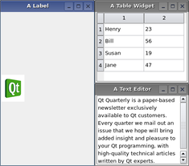

| Home · All Classes · Modules · QSS HELP · QSS 案例 · VER007 HOME |
该QMdiArea小部件提供在MDI窗口的显示区域。More...
该QMdiArea小部件提供在MDI窗口的显示区域。
QMdiArea功能，本质上，就像一个窗口管理器的MDI窗口。例如，它绘制它管理自身并安排他们在一个层叠或平铺图案的窗户。 QMdiArea是常用的在一个中心部件QMainWindow创建MDI应用程序，但也可以放置在任何布局。下面的代码将一个区域的主窗口：
QMainWindow *mainWindow = new QMainWindow;
mainWindow->setCentralWidget(mdiArea);
不同的是窗口管理器的顶层窗口，所有窗口的标志（Qt.WindowFlags）通过QMdiArea只要标志由当前插件式支承。如果一个特定的标记是不支持的样式（例如，WindowShadeButtonHint） ，你仍然可以遮阳的窗口showShaded （ ） 。
在QMdiArea子窗口的实例QMdiSubWindow。它们被添加到一个MDI面积addSubWindow（ ） 。这是常见的传递QWidget，它被设置为内部部件，该函数，但也有可能通过一个QMdiSubWindowdirectly.The类继承QWidget和编程时，你可以使用相同的API作为一个正常的顶层窗口。QMdiSubWindow也有行为特定于MDI窗口。请参阅QMdiSubWindow类的描述更多的细节。
当它获取键盘焦点时，或者当子窗口被激活setFocus（）被调用。用户通过在通常的方式移动焦点激活一个窗口。在MDI领域放出subWindowActivated（ ）信号，当活动窗口的变化，以及activeSubWindow（ ）函数返回活动子窗口。
便利的功能subWindowList（ ）返回所有子窗口的列表。此信息可以在含有窗口的列表的弹出式菜单中使用，例如。
该子窗口是由当前分类WindowOrder。这是用于subWindowList（ ）和activateNextSubWindow（）和acivatePreviousSubWindow （） 。此外，它与层叠或平铺的窗口时使用cascadeSubWindows（）和tileSubWindows（ ） 。
QMdiArea为子窗口有两个内置的布局策略：cascadeSubWindows（）和tileSubWindows（ ） 。两者都是插槽，很容易连接到菜单项。
 |
 |
Note:默认的滚动条属性QMdiArea是Qt.ScrollBarAlwaysOff。
这个枚举变量描述了自定义的行为的选项QMdiArea。
| Constant | Value | Description |
|---|---|---|
| QMdiArea.DontMaximizeSubWindowOnActivation | 0x1 | 当活动的子窗口最大化时，默认的行为是最大限度的被激活的下一个子窗口。如果你不希望出现此行为，设置这个选项。 |
该AreaOptions类型是一个typedef为QFlags\u003cAreaOption\u003e 。它存储AreaOption值的或组合。
这个枚举变量描述了区域的视图模式，即如何子窗口将被显示。
| Constant | Value | Description |
|---|---|---|
| QMdiArea.SubWindowView | 0 | 显示子窗口与窗框（默认） 。 |
| QMdiArea.TabbedView | 1 | 显示子窗口与标籤在标籤栏。 |
这个枚举被引入或修改的Qt 4.4 。
See also setViewMode（ ） 。
指定的标准来使用订购的通过返回的子窗口列表subWindowList（ ） 。该功能cascadeSubWindows（）和tileSubWindows（ ）布置窗口的时候按照这个顺序。
| Constant | Value | Description |
|---|---|---|
| QMdiArea.CreationOrder | 0 | 该窗口在其创建的顺序返回。 |
| QMdiArea.StackingOrder | 1 | 该窗口在它们被叠的顺序返回，与最顶层窗口是在列表的最后。 |
| QMdiArea.ActivationHistoryOrder | 2 | 该窗口在其被激活的顺序返回。 |
See also subWindowList（ ） 。
该parent的说法，如果不是没有，原因self通过Qt的，而不是PyQt的拥有。
构造一个空MDI区域。parent被传递给QWidget的构造。
这种方法也是一个Qt槽与C + +的签名void activateNextSubWindow()。
使键盘焦点到另一个窗口的子窗口的列表中。激活该窗口将成为下一个由电流决定activation order。
See also activatePreviousSubWindow（）和QMdiArea.WindowOrder。
这种方法也是一个Qt槽与C + +的签名void activatePreviousSubWindow()。
使键盘焦点到另一个窗口的子窗口的列表中。激活的窗口将是前一个的电流确定activation order。
See also activateNextSubWindow（）和QMdiArea.WindowOrder。
返回一个指向当前活动的子窗口。如果没有窗口当前处于活动状态，则返回0 。
子窗口被视为顶层窗口相对于窗口状态，即，如果在MDI禁区外一个小部件是活动窗口，没有子窗口将被激活。请注意，如果在窗口小部件中，在MDI领域的生活获得焦点时，该窗口将被激活。
See also setActiveSubWindow（）和Qt.WindowState。
该widget说法有它的所有权转移给Qt的。
添加widget作为一个新的子窗口的MDI区域。如果windowFlags是非零的，它们将复盖在部件上设置的标志。
该widget可以是一个QMdiSubWindow或其他QWidget（在这种情况下， MDI的区域将创建一个子窗口，并设置widget作为内部部件） 。
Note:一旦子窗口已经被添加，其母公司将是viewport widget的QMdiArea。
QMdiArea mdiArea;
QMdiSubWindow *subWindow1 = new QMdiSubWindow;
subWindow1->setWidget(internalWidget1);
subWindow1->setAttribute(Qt.WA_DeleteOnClose);
mdiArea.addSubWindow(subWindow1);
QMdiSubWindow *subWindow2 =
mdiArea.addSubWindow(internalWidget2);
当您创建自己的子窗口中，你必须设置Qt.WA_DeleteOnClose如果您想要在在MDI领域关上窗户要删除小工具属性。如果不是，该窗口会被隐藏，并在MDI面积不会激活下一个子窗口。
返回QMdiSubWindow被添加到MDI区域。
See also removeSubWindow（ ） 。
这种方法也是一个Qt槽与C + +的签名void cascadeSubWindows()。
安排所有子窗口在级联模式。
See also tileSubWindows（ ） 。
从重新实现QObject.childEvent（ ） 。
这种方法也是一个Qt槽与C + +的签名void closeActiveSubWindow()。
关闭激活的子窗口。
See also closeAllSubWindows（ ） 。
这种方法也是一个Qt槽与C + +的签名void closeAllSubWindows()。
通过发送关闭所有的子窗口QCloseEvent每个窗口。您可能会收到subWindowActivated（ ）从子窗口的信号，他们正在关闭之前（如果在MDI领域启动子窗口时，另一个被关闭） 。
这种无视close事件子窗口将保持打开状态。
See also closeActiveSubWindow（ ） 。
返回一个指向当前子窗口，或者0，如果没有当前的子窗口。
这个函数将返回相同的activeSubWindow（）如果QApplication containing QMdiArea是活动的。
See also activeSubWindow（）和QApplication.activeWindow（ ） 。
从重新实现QObject.event（ ） 。
从重新实现QObject.eventFilter（ ） 。
从重新实现QWidget.minimumSizeHint（ ） 。
从重新实现QWidget.paintEvent（ ） 。
移除widget从MDI区域。该widget必须是QMdiSubWindow或一个小部件是一个子窗口的内部部件。注widget是从来没有真正被删除QMdiArea。如果QMdiSubWindow传递在其父被设置为0 ，并将其除去，但是，如果内部部件被传递到子插件被设置为0 ，但QMdiSubWindow不会被删除。
See also addSubWindow（ ） 。
从重新实现QWidget.resizeEvent（ ） 。
从重新实现QAbstractScrollArea.scrollContentsBy（ ） 。
这种方法也是一个Qt槽与C + +的签名void setActiveSubWindow(QMdiSubWindow *)。
激活的子窗口window。如果window为0时，任何当前活动窗口被关闭。
See also activeSubWindow（ ） 。
If on是真的，option是对MDI的区域中启用，否则它被禁用。看AreaOption每个选项的效果。
See also AreaOption和testOption（ ） 。
这个槽被调用者QAbstractScrollArea后setViewport（ ）被调用。在子类重新实现此功能QMdiArea初始化新viewport之前就被采用。
See also setViewport（ ） 。
从重新实现QWidget.showEvent（ ） 。
从重新实现QWidget.sizeHint（ ） 。
返回在MDI领域的所有子窗口的列表。如果order is CreationOrder（默认值） ，该窗口被排列在它们被插入到工作区中的顺序。如果order is StackingOrder，窗口中列出了它们的堆叠顺序，与最顶层窗口的最后一个项目在列表中。如果order is ActivationHistoryOrder，窗户是根据他们最近的激活历史记录中列出。
See also WindowOrder。
返回True如果option被启用，否则返回False 。
See also AreaOption和setOption（ ） 。
这种方法也是一个Qt槽与C + +的签名void tileSubWindows()。
安排所有子窗口的瓷砖图案。
See also cascadeSubWindows（ ） 。
从重新实现QObject.timerEvent（ ） 。
从重新实现QAbstractScrollArea.viewportEvent（ ） 。
这是该信号的默认超载。
QMdiArea之后发出这个信号window已被激活。何时window为0时，QMdiArea刚刚解除其最后一个活动窗口，并有在工作区没有活动的窗口。
See also QMdiArea.activeSubWindow（ ） 。
| PyQt 4.10.3 for X11 | Copyright © Riverbank Computing Ltd and Nokia 2012 | Qt 4.8.5 |